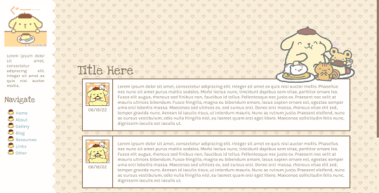

⟵ back to cottage
𖹭 Lovely
Thanks to these sources/sites/people I know in the progress of making this site ❤︎
- My site got inspired from mir/heartspace and bondiaries
- I get most of my resources through: fancyparts, irasutoya, foollovers, doqmeat
- The fonts I used: Nunito, Source Serif 4 through Google Fonts
- Bushes pic is taken and edited by me. Ilovemygf pic is edited by me
- This site is a work of time and love ❤︎
More about my layout
Kinda similar to my friend's layout mir/heartspace and thanks to ©repth with their theme. They have a lot of amazing work and the layout below is what I based on.
